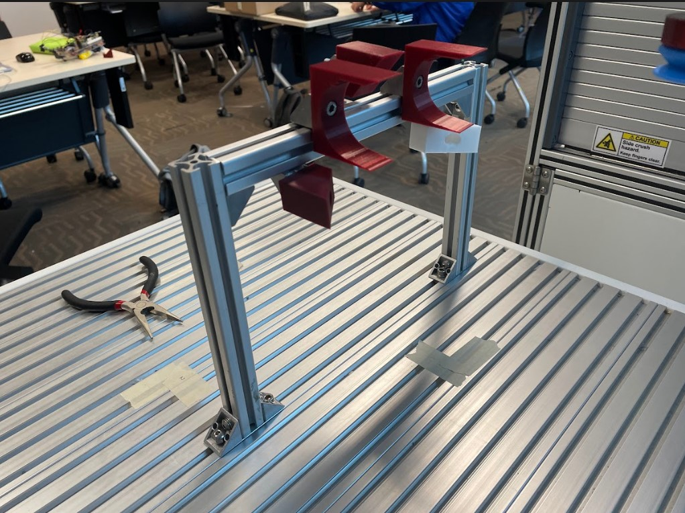

Project 4
Automate a box folding process using an Omron robot.
In this project, I leveraged an Omron robot to automate the folding of SKU boxes. This initiative aimed to improve efficiency and reduce manual labor. Automating this task not only streamlined operations but also demonstrated the potential for robotics in everyday industrial applications.
Project Goals
- Improving efficiency
- Demonstrating robotics application
Technical Details
- Hardware: Omron robot, custom-designed jig for box folding
- Software: ROS2 programming
Designing and Prototyping
To ensure the robot could accurately fold the boxes, a prototype jig was designed and tested. The jig simulates the folding process, allowing for adjustments and optimizations before implementation.
Prototype of Jig Used

Implementation and Testing
The box folding procedure was meticulously programmed into the Omron robot. Multiple iterations and tests were conducted to refine the process and ensure reliability and efficiency.